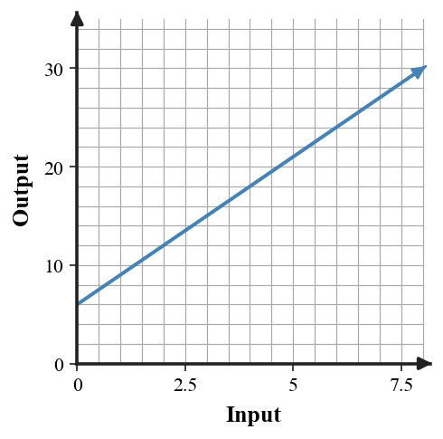
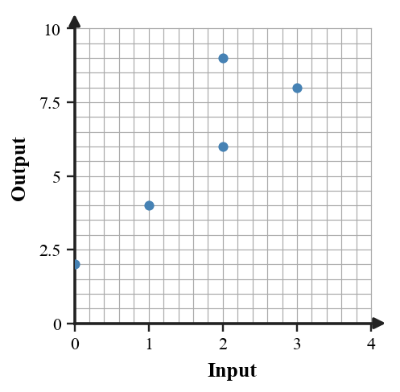
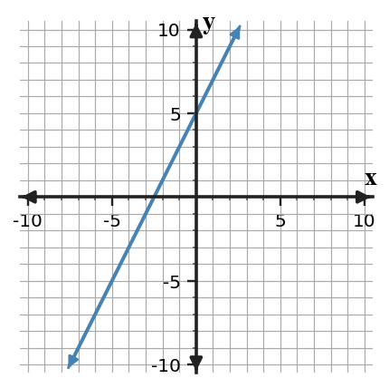
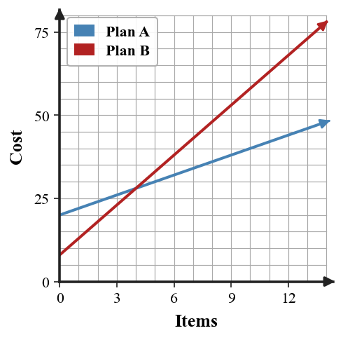

Unit 1 Progress Tracker
Students will represent and interpret relationships by connecting tables, graphs, equations, and contexts that model the same situation.
I need more instruction and practice.
I understand most of it but need more practice.
I can do this independently.
I can teach it.
Progress Tracking
Progress Tracking
Evidence
Progress Tracking
Evidence
Progress Tracking
Evidence
Progress Tracking
Evidence
Learning Ladder
| Rung | I Can Statement | DOK | Level |
|---|---|---|---|
| 8 | I can construct a connected model that uses a table, graph, equation, and context to represent one relationship and connect each part to the others. | DOK 4 | Above |
| 7 | I can design and revise a short situation so its table, graph, equation, and function-family features all align. | DOK 4 | Above |
| 6 | I can critique a representation choice by using evidence from values, structure, and context meaning. | DOK 3 | Essential |
| 5 | I can assess whether an equation, expression, or function family fits a situation and revise the model when evidence does not agree. | DOK 3 | Essential |
| 4 | I can construct missing representations from a given table, graph, equation, or context. | DOK 2 | Essential |
| 3 | I can apply input-output rules, expression rewrites, and equation-solving steps to solve routine relationship problems. | DOK 2 | Essential |
| 2 | I can use vocabulary and notation for inputs, outputs, variables, expressions, equations, and common function families. | DOK 1 | Essential |
| 1 | I can apply a given rule to produce output values, ordered pairs, and simple solution checks. | DOK 1 | Essential |
Student Goal Setting
Unit 1 Practice by Depth of Knowledge
Format: 3-5 minute warm-up, vocabulary check, representation recognition, or exit ticket
Purpose: DOK 1 tasks reveal whether students can use foundational notation, vocabulary, and simple input-output procedures before moving into connected representations.
Assessment Ideas
- Coordinate Pairs and Axes Can Be Assessed After Section 1.2 - Represent coordinate pairs by naming x- and y-coordinates and quadrants; locate points on axes; distinguish reversed ordered pairs as input-output pairs.
- Intercepts and Starting Values Can Be Assessed After Section 1.1 - Interpret x- and y-intercepts on graphs and tables; connect vertical intercepts to starting amounts; name points that lie on an axis.
- Input-Output Rules Can Be Assessed After Section 1.2 - Use table patterns and given rules to complete outputs; substitute inputs into verbal and symbolic rules; choose tables that satisfy a rule.
- Rates and Linear Features Can Be Assessed After Section 1.3 - Calculate repeated changes in table outputs; identify slope, starting value, fixed amount, and amount per item; compare repeated changes between tables.
DOK 1 performance shows whether students can read coordinate notation, intercepts, input-output rules, and repeated changes before being asked to connect representations. Error patterns separate axis/quadrant confusion from rule-substitution or slope/starting-value readiness.
A music app charges a monthly fee and then a charge for each downloaded song. In this context, identify the input quantity and the output quantity.
For the rule $y=2x+7$, find the output when the input is $4$.
The table shows a relationship. Write the ordered pair for the column where $x=-1$.
| $x$ | -2 | -1 | 0 | 1 |
|---|---|---|---|---|
| $y$ | 1 | 4 | 7 | 10 |
Which representation uses points on a coordinate plane?
- table
- graph
- equation
- verbal context
A table has outputs $5,10,20,40$ as inputs increase by $1$. Which family is most likely?
- linear
- quadratic
- exponential
- absolute value
In the expression $6x+11$, identify the coefficient of $x$.
Check whether $n=5$ is a solution to $3n+4=19$.
Use the graph to estimate the output when the input is $4$.

Format: Mini-quiz, graph/table task, matching task, partner check, or short written task
Purpose: DOK 2 tasks reveal whether students can transfer a relationship from one form to another and use rules, structure, and solution steps in familiar situations.
Assessment Ideas
- Graph Tables and Intercepts Can Be Assessed After Section 1.1 - Construct coordinate graphs from tables and scaled contexts; state vertical and horizontal intercepts; describe trends and axis scales.
- Write and Check Rules Can Be Assessed After Section 1.2 - Formulate verbal and symbolic rules from tables; generate tables from linear rules; verify ordered pairs by substitution.
- Constant Rate Procedures Can Be Assessed After Section 1.3 - Determine constant rates from tables and graphs; complete patterns from starting values and changes; predict outputs using rates of change.
- Linear Models and Comparisons Can Be Assessed After Section 1.5 - Use tables and equations to write linear models; compare starting values and rates; solve for when one plan first exceeds another.
DOK 2 performance shows whether students can move from tables to graphs and rules, calculate constant rates, and use linear models to make comparisons in familiar settings. The results reveal whether breakdowns are graph scaling/intercept reading, rule writing, rate calculation, or plan comparison.
A parking garage charges $8 to enter and $3 per hour. Complete the table and write an equation for total cost $C$ after $h$ hours.
| $h$ | 0 | 1 | 2 | 3 |
|---|---|---|---|---|
| $C$ |
Graph the relationship shown in the table on the blank coordinate plane. Label the axes with the quantities $x$ and $y$.
| $x$ | 0 | 1 | 2 | 3 |
|---|---|---|---|---|
| $y$ | 2 | 5 | 8 | 11 |

The plotted points show an input-output relation. Decide whether the relation gives exactly one output for each input, and justify your decision using the points.

Rewrite $3(x+4)+2x$ in an equivalent simplified form. Show the distribution and combining steps.
A club rents a meeting room for $12 plus $4 per guest. Write and solve an equation to find how many guests can attend if the total cost is $36. Then write one sentence interpreting the solution.
Use the table to identify the likely function family. Support your choice with a pattern in the outputs.
| $x$ | 0 | 1 | 2 | 3 | 4 |
|---|---|---|---|---|---|
| $y$ | 1 | 4 | 9 | 16 | 25 |
Decide whether the table and equation represent the same relationship. Use at least two values as evidence. Equation: $y=5x+1$.
| $x$ | 0 | 1 | 2 | 3 |
|---|---|---|---|---|
| $y$ | 1 | 6 | 11 | 16 |
A rule says, "double the input, then subtract $5$." Generate four ordered pairs using inputs $0,1,2,3$.
Format: Constructed response, model critique, strategy comparison, representation analysis, or discourse prompt
Purpose: DOK 3 tasks reveal whether students can use evidence to assess connections, reasonableness, and structure rather than relying on surface features.
Assessment Ideas
- Critique Graph Interpretations Can Be Assessed After Section 1.1 - Critique intercept claims in context; determine starting amounts from vertical intercepts; construct scaling strategies for readable graphs.
- Justify Rule and Pattern Consistency Can Be Assessed After Section 1.3 - Validate whether rules, tables, and repeated differences agree; revise mismatched values; compare difference and rule methods for predictions.
- Compare Representations with Evidence Can Be Assessed After Section 1.3 - Construct evidence-based tests across graphs, tables, equations, and contexts; locate and revise mismatches; justify whether one equation can represent multiple forms.
- Compare Claims and Methods Can Be Assessed After Section 1.5 - Assess claims about competing linear plans; compare table and rate-based solution methods; reason from equation structure to decide whether outputs can match.
DOK 3 performance shows whether students can use intercepts, repeated differences, equations, tables, and contexts as evidence rather than relying on a single surface feature. It also reveals how well students revise mismatches and compare methods or claims with precise support.
A student says the context "Start with $15$ and add $4$ each week" matches $y=15x+4$. Critique the claim using the roles of starting value and repeated change, and revise the equation if needed.
The equation $y=2x+5$ and the table are meant to represent the same relationship. Find the first mismatch, explain how you know, and revise the incorrect value.
| $x$ | 0 | 1 | 2 | 3 |
|---|---|---|---|---|
| $y$ | 5 | 7 | 10 | 11 |
Two students classify the table. Student A checks repeated differences; Student B checks repeated ratios. Use both methods to decide the family and explain which method gives clearer evidence here.
| $x$ | 0 | 1 | 2 | 3 |
|---|---|---|---|---|
| $y$ | 3 | 6 | 12 | 24 |
A student simplified $4(2x-3)+5x$ as $8x-12+5=8x-7$. Critique the error and revise the simplification.
Two students solve $5(x+2)=35$. One divides by $5$ first; the other distributes first. Use both methods, then explain which method is more efficient and why.
Compare the graph and context. Context: A total starts at $3$ and increases by $2$ each step. Decide whether the graph could model the context and justify your conclusion using the intercept and rate.

A student says every relation with four plotted points is a function because every point has one output. Critique the reasoning and give a counterexample or correction.
A context says a team pays a $6 one-time fee and $10 per participant. A student writes $6n+10$. Assess whether the expression fits the context, and revise the model if evidence does not agree.
Format: Brief performance task, modeling task, critique-and-revise task, design task, or capstone synthesis task
Purpose: DOK 4 tasks reveal whether students can synthesize the unit by designing, revising, and coordinating multiple representations within short performance tasks.
Assessment Ideas
- Create Coordinate Models Can Be Assessed After Section 1.3 - Design coordinate-plane models with constraints; include axis labels, ordered pairs, graphs, and intercept explanations; justify alignment across representations.
- Revise and Synthesize Rules Can Be Assessed After Section 1.3 - Create and revise linear input-output models; correct table errors to make constant rates; build rules, tables, graphs, and ordered pairs that satisfy constraints.
- Design Linear Models Can Be Assessed After Section 1.3 - Develop realistic linear models with equations, tables, graphs, intercepts, and domains; choose stronger models or representations; connect each representation to the context.
- Compare and Recommend Plans Can Be Assessed After Section 1.5 - Evaluate competing reward plans for short- and long-term contexts; revise flawed one-week comparisons; generate equations and recommendations with evidence.
DOK 4 performance shows whether students can create, revise, and coordinate linear models across contexts, tables, graphs, equations, constraints, and recommendations. It reveals whether students can make coherent modeling choices and defend them without turning the task into a large project.
Design a connected model for a short situation where a total begins at $4$ and increases by $3$ each step. Include a context, equation, four-row table, and graph on the blank coordinate plane. Explain how the four representations agree.
A fundraiser model is supposed to start at $20 and add $5 per item. The table shows $(0,20),(1,25),(2,35),(3,35)$. Revise the table so it matches the model, then write an equation and one-sentence context that agree with your revision.
Create two different family examples that both have output $10$ when the input is $0$: one linear and one exponential. For each example, provide an equation, a three-row table, and a context where the family choice makes sense.
The graph shows two short-term cost models. Write an equation for each plan from the graph, find approximately where the plans are equal, and recommend one plan for $12$ items with evidence.

Create a realistic context that can be represented by both $7x+14$ and $7(x+2)$. Explain what each form reveals about the situation and give one input-output check that confirms equivalence.
Design a one-variable equation model for a school or club situation where the solution is $6$. Define the variable, write the equation, solve it, and interpret why $6$ makes sense in the context.
A model is described as "start at $4$ and add $2$ each step," but the equation given is $y=4x+2$. Critique the mismatch, revise one part of the model, and explain how your revision aligns the context, equation, and table pattern.
A student wants to model social media followers for the first four weeks after a club launch. Create either a linear or exponential model with a table and equation, justify why your family choice fits the short-term situation, and explain one limitation of your model.